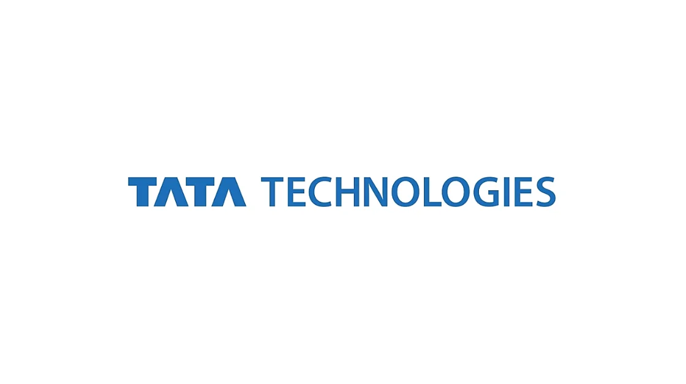

Tata Technologies Recuirement 2022
Tata Technologies Recruitment 2022 | GET-Mechanical | Apply Now!
Tata Technologies has announced a job notification for the post of GET-Mechanical. A student from various disciplines can apply for Tata Technologies Recruitment 2022. Interested and eligible candidates can read more details below

| Tata Technologies Recruitment 2022 | |||
|---|---|---|---|
| 1 | Company name | Tata Technologies | |
| 2 | Post Name | GET-Mechanical | |
| 3 | Salary | 5 LPA | |
| 4 | Experience | 0-2 years | |
| 5 | Job Location | Bangalore/Pune | |
| 6 | Batch | 2022/2021 | |
Job Description:
Tata Technologies is hiring candidates for the post of GET-Mechanical.
Job Responsibilities
▪︎ This position is responsible for creation of CATIA CAD geometry and Drawings in support of various chassis projects. You will have responsibility for:
▪︎ Very highly skilled to Carry out 3D modelling, 2D drawings, assembly in Catia-V5 (Module – Surfacing, assembly, drafting, kinematics, DMU etc.)
▪︎ Good knowledge of GD&T
▪︎ Basic knowledge of manufacturing processes like casting, forging, sheet metal.
▪︎ DMU management, integrating vehicle systems & project coordination.
▪︎ Reviewing existing benchmarking data and obtaining new data as required.
▪︎ Responsible for CAD sign-off, BOM creation/ management.
▪︎ Conduct/ participate regular design reviews and escalate issues.
▪︎ Verification of the detail designs for prototype building.
▪︎ Utilizes technical skills and design experience to plan, organize and lead
▪︎ Co-ordinate design activities.
▪︎ Ensure quality of the CAD design, drawings & speed of delivery.
▪︎ Workout modularisation & standardisation proposals
▪︎ Technical documentation & design change analysis.
Eligibility Criteria:(Associate Software Engineer):
▪︎ B.E / B.Tech (Mechanical Engineering) – 2021 & 2022 pass out
▪︎ Knowledge / Experience: 0 to 6 months(More than 6 months Exp is not allowed)
▪︎ Good all round design skills which must include past experience of working on at least one of aggregates like – frame, steering, suspension, brakes, fuel system, exhaust etc.
▪︎ Team Centre Engineering (TCE)/PLM
▪︎ Engineering knowledge of defined component(s) / system(s) design, function, performance, production & manufacturing requirements
▪︎ Excellent communications skills, demonstrated ability to communicate at all levels,
Preferred skill:
▪︎ Team player and quick learner
▪︎ Good Communication- Verbal and Non Verbal skills
▪︎ Multi-Tasking
About Tata Technologies:
Tata Technologies Limited is a company in the Tata Group that provides services in engineering and design, product lifecycle management, manufacturing, product development, and IT service management to automotive and aerospace original equipment manufacturers and their suppliers. It is a subsidiary of Tata Motors
How to Apply for Tata Technologies Recruitment 2022?
▪︎ Interested and Eligible candidates can apply for this drive online by scrolling down and clicking on Apply HERE.